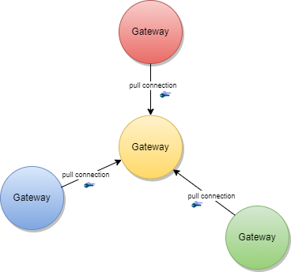
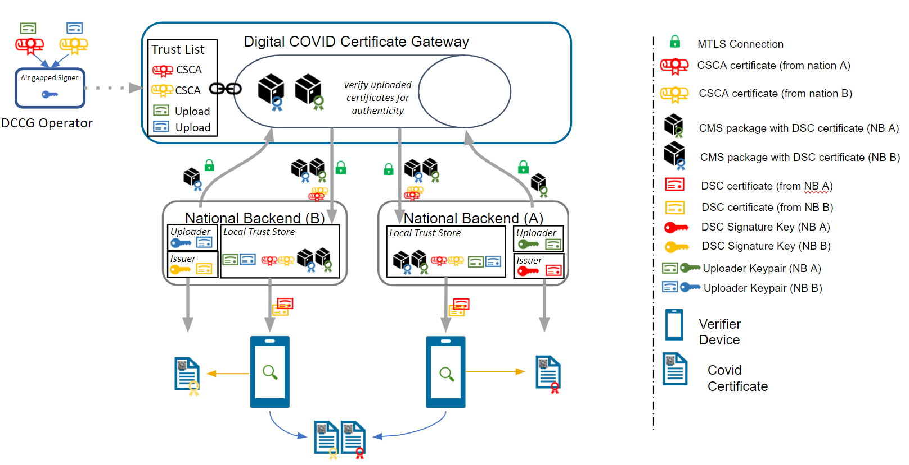
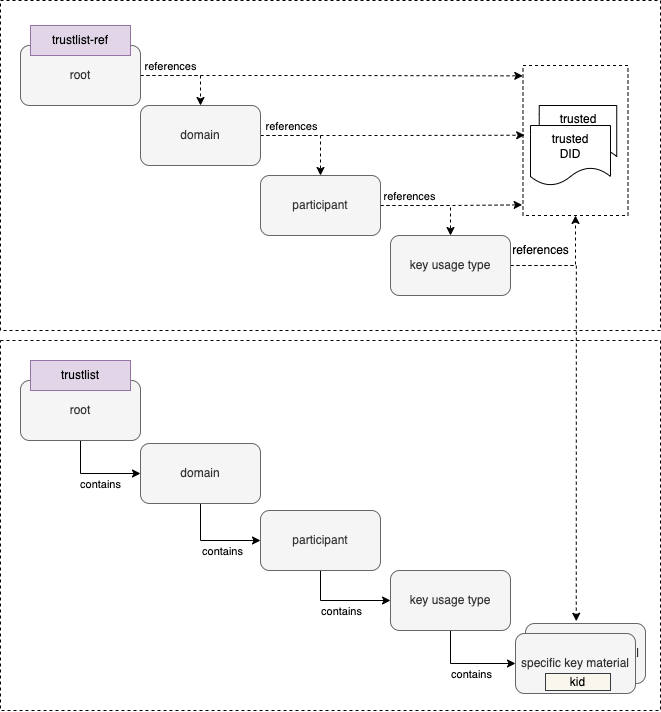
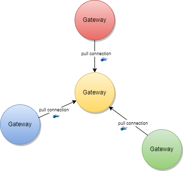
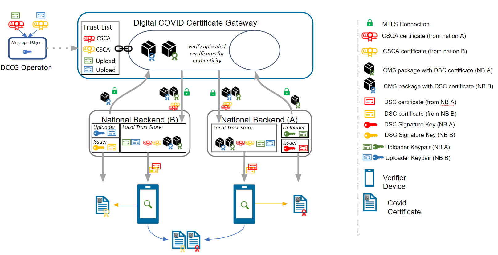
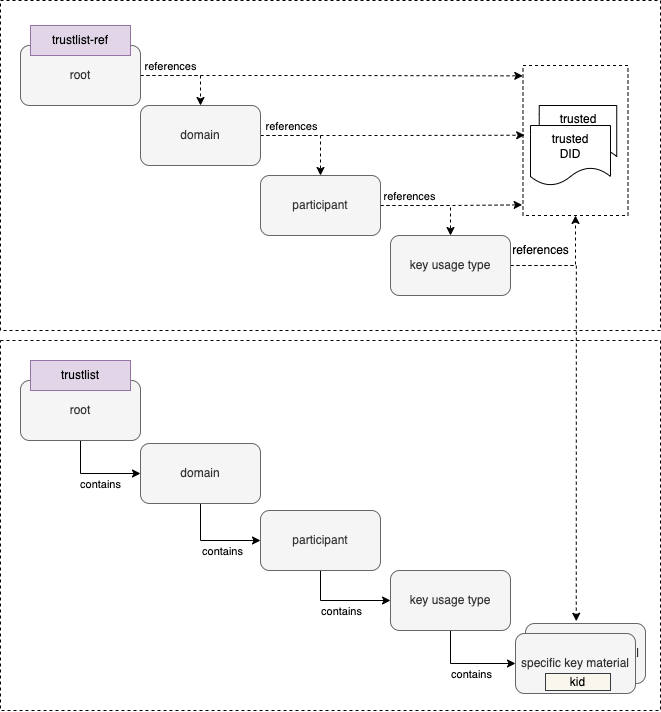

{kind=link}
{kind=link}











This fragment is not visible to the reader
This publication includes IP covered under the following statements.
| Type | Reference | Content |
|---|---|---|
| web | tng-cdn-dev.who.int | address : http://tng-cdn-dev.who.int/v2/trustlist/-/WHO/did.json |
| web | tng-cdn-uat.who.int | address : http://tng-cdn-uat.who.int/v2/trustlist/-/WHO/did.json |
| web | tng-cdn.who.int | address : http://tng-cdn.who.int/v2/trustlist/-/WHO/did.json |
| web | who.int |
IG © 2023+ WHO
. Package smart.who.int.trust#1.2.0 based on FHIR 5.0.0
. Generated 2025-04-02
Links: Table of Contents | QA Report | Version History | License |
| web | www.bsi.bund.de | Cryptographic algorithms and TLS cipher suites shall be chosen based on the current recommendation from the German Federal Office for Information Security (BSI) or SOG-IS. These recommendations and the recommendations of other institutions and standardization organization are quite similar. The recommendations can be found in the technical guidelines TR 02102-1 and TR 02102-2 ( source ) or SOG-IS Agreed Cryptographic Mechanisms ( source ). |
| web | www.sogis.eu | Cryptographic algorithms and TLS cipher suites shall be chosen based on the current recommendation from the German Federal Office for Information Security (BSI) or SOG-IS. These recommendations and the recommendations of other institutions and standardization organization are quite similar. The recommendations can be found in the technical guidelines TR 02102-1 and TR 02102-2 ( source ) or SOG-IS Agreed Cryptographic Mechanisms ( source ). |
| web | github.com | Please follow the steps described in the: tng-participant-template and README.md . |
| web | github.com | Please follow the steps described in the: tng-participant-template and README.md . |
| web | smart.who.int | A Diagram that gives and overview about the steps in order to start the Full Onboarding. |
| web | smart.who.int | The document contain a detailed description of the tasks to be carried out by the participant. Note: Please note that the participant’s work begins at step 8 and ends at step 14. |
| web | github.com | Invite the WHO bot user to the private repository (with read rights). The bot user is: tng-bot for PROD and tng-bot-dev for DEV (optional) and UAT environments. |
| web | github.com | Invite the WHO bot user to the private repository (with read rights). The bot user is: tng-bot for PROD and tng-bot-dev for DEV (optional) and UAT environments. |
| web | code.visualstudio.com | CQL can be authored using any text editor, however using an integrated development environment (IDE) that specifically supports CQL can streamline the experience. The Visual Studio (VS) Code IDE has a CQL extension that supports syntax highlighting when writing CQL. |
| web | marketplace.visualstudio.com | CQL can be authored using any text editor, however using an integrated development environment (IDE) that specifically supports CQL can streamline the experience. The Visual Studio (VS) Code IDE has a CQL extension that supports syntax highlighting when writing CQL. |
| web | smart.who.int | DDCC IG Code Systems |
| web | smart.who.int | DDCC IG Value Sets |
| web | smart.who.int | The WHO DDCC IG specifies health credentials using the FHIR standard, and the CQL for expressing business rules against credentials operates on the FHIR resources that make up a credential. The DDCC health credential document Bundle contains a minimal Patient resource along with appropriate linked Immunization resources representing information on vaccines administered and Observation resources representing test results. |
| web | smart.who.int | The WHO DDCC IG specifies health credentials using the FHIR standard, and the CQL for expressing business rules against credentials operates on the FHIR resources that make up a credential. The DDCC health credential document Bundle contains a minimal Patient resource along with appropriate linked Immunization resources representing information on vaccines administered and Observation resources representing test results. |
| web | smart.who.int | The WHO DDCC IG specifies health credentials using the FHIR standard, and the CQL for expressing business rules against credentials operates on the FHIR resources that make up a credential. The DDCC health credential document Bundle contains a minimal Patient resource along with appropriate linked Immunization resources representing information on vaccines administered and Observation resources representing test results. |
| web | smart.who.int | CQL can be packaged for distribution in a FHIR Library resource, intended for describing and sharing knowledge artifacts like CQL. The CRMI IG Packaging Guidelines provide information on how CQL libraries should be packaged. Examples of CQL packaged in FHIR Libraries can be found in the DDCC IG Knowledge Artifact Libraries . |
| web | github.com | Once CQL has been authored and packaged into a FHIR Library for distribution the CQL can be run in a CQL execution environment. Before being run, CQL must first be converted into its ELM representation using the CQL-to-ELM Translator . This conversion can be accomplished using the CQL to ELM Translation Service , which is also available as a docker image . The resulting ELM can then be run in a CQL Execution Engine. Available CQL Execution Engines include: |
| web | github.com | Once CQL has been authored and packaged into a FHIR Library for distribution the CQL can be run in a CQL execution environment. Before being run, CQL must first be converted into its ELM representation using the CQL-to-ELM Translator . This conversion can be accomplished using the CQL to ELM Translation Service , which is also available as a docker image . The resulting ELM can then be run in a CQL Execution Engine. Available CQL Execution Engines include: |
| web | hub.docker.com | Once CQL has been authored and packaged into a FHIR Library for distribution the CQL can be run in a CQL execution environment. Before being run, CQL must first be converted into its ELM representation using the CQL-to-ELM Translator . This conversion can be accomplished using the CQL to ELM Translation Service , which is also available as a docker image . The resulting ELM can then be run in a CQL Execution Engine. Available CQL Execution Engines include: |
| web | github.com | JavaScript CQL Execution Framework |
| web | github.com | Java CQL Evaluation Engine |
| web | github.com | There is also a CQL Evaluator , which combines the CQL-to-ELM Translator with the Java CQL Evaluation Engine. |
| web | smart.who.int | The DDCC Implementation Guide defines both the common standard representation against which the CQL can be written and the mappings for translating various source formats into the common representation. The source formats are |
| web | health.ec.europa.eu | European Union Digital COVID Certificates (EUDCC) |
| web | www.icao.int | International Civil Aviation Organization Visible Digital Seals (ICAO VDS-NC) |
| web | divoc.egov.org.in | Digital Infrastructure for Verifiable Open Credentialing (DIVOC) |
| web | smart.who.int | The common representation that these source health credential formats need to be transformed to before evaluating CQL business rules is the World Health Organization Digital Documentation of COVID-19 Certificates (WHO DDCC) |
| web | fhir-ru.github.io | Mapping the structure requires pulling data from the source format and expressing it in the destination format. For example, the name of the credential holder has different representations in each of the formats and needs to be correctly mapped to the destination format. Mapping the structure of the credential is accomplished using FHIR StructureMaps . StructureMaps define rules that describe how two different structures are related to each other and provides the logic that defines how instances can be converted from one structure to the other in an automated fashion. |
| web | fhir-ru.github.io | In addition to mapping the overall structure, clinical concepts need to be correctly mapped. For example, one format may use LOINC to represent the type of a medical test while another format may use SNOMED CT. Mapping the clinical concepts from one format to another is accomplished using FHIR ConceptMaps . A ConceptMap defines a mapping from a set of concepts in one code system to concepts in another code system. |
| web | smart.who.int | DDCC IG Structure Maps |
| web | smart.who.int | DDCC IG Concept Maps |
| web | github.com | Set up the Matchbox FHIR Server for transforming credentials |
| web | nodejs.org | Set up a Node.js project with appropriate CQL dependencies to provide an execution environment for the ELM representation |
| web | github.com | Credentials can be converted using the appropriate StructureMaps using the Matchbox FHIR Server. |
| web | smart.who.int | This is a two step process. The first step is to convert the vaccination credential payload into the DDCC CoreDataSet logical model using the appropriate StructureMap from the DDCC IG : |
| web | smart.who.int | Running CQL business rules against a record requires translating the CQL to the Expression Logical Model (ELM) representation and running the ELM in a CQL execution engine. For this document we'll start with one of the examples from the DDCC IG : |
| web | github.com | The ELM translation of the CQL can be run against the vaccination record using the JavaScript CQL Execution Framework library along with the JavaScript CQL Execution FHIR Data Source . This document describes how to set this up in a simple Node.js project. Node.js will first need to be installed if it is not already available. A new Node.js project with the needed CQL libraries can be set up using npm: |
| web | github.com | The ELM translation of the CQL can be run against the vaccination record using the JavaScript CQL Execution Framework library along with the JavaScript CQL Execution FHIR Data Source . This document describes how to set this up in a simple Node.js project. Node.js will first need to be installed if it is not already available. A new Node.js project with the needed CQL libraries can be set up using npm: |
| web | tng-cdn-dev.who.int | https://tng-cdn-dev.who.int/v2/trustlist/did.json |
| web | tng-cdn-dev.who.int | https://tng-cdn-dev.who.int/v2/trustlist-ref/did.json |
| web | tng-cdn-uat.who.int | https://tng-cdn-uat.who.int/v2/trustlist/did.json |
| web | tng-cdn-uat.who.int | https://tng-cdn-uat.who.int/v2/trustlist-ref/did.json |
| web | tng-cdn.who.int | https://tng-cdn.who.int/v2/trustlist/did.json |
| web | tng-cdn.who.int | https://tng-cdn.who.int/v2/trustlist-ref/did.json |
| web | smart.who.int | The did trustlists structure diagram depicts the reference and contains relations of the trustlist types for the defined levels. |
| web | github.com | https://github.com/WorldHealthOrganization/tng-cdn-dev |
| web | worldhealthorganization.github.io | https://worldhealthorganization.github.io/tng-cdn-dev |
| web | github.com | https://github.com/WorldHealthOrganization/tng-cdn-uat |
| web | tng-cdn-uat.who.int | https://tng-cdn-uat.who.int |
| web | tng-cdn.who.int | https://tng-cdn.who.int |
| web | github.com | For more information regarding the DID Document format for a Trust List specification, see WHO DDCC Trust List Specification documentation . For an example of a signed DID Document, see Appendix A of the documentation. |
| web | github.com | For more information regarding the DID Document format for a Trust List specification, see WHO DDCC Trust List Specification documentation . For an example of a signed DID Document, see Appendix A of the documentation. |
| web | www.openssl.org |
- Required for generating and managing digital certificates. - Minimum Version : 1.1.1 or higher. - Verify : openssl version
. - Path Configuration : Ensure OpenSSL is correctly added to the system path. - Download OpenSSL |
| web | curl.se |
- Necessary for command-line data transfers, especially useful for API requests. - Minimum Version : 7.68.0 or higher. - Verify : curl --version
. - Download cURL |
| web | git-scm.com |
- Essential for version control and interacting with GitHub repositories. - Minimum Version : 2.28.0 or higher (recommended for improved configuration capabilities). - Verify : git --version
. - Download Git |
| web | code.visualstudio.com |
- Use a reliable text editor or IDE such as Visual Studio Code
, Sublime Text
, or Notepad++
for editing files. - Extensions : If using VS Code, consider adding extensions for Markdown and GitHub integration. - Download Visual Studio Code |
| web | github.com | Please check Create private repository video for reference |
| web | github.com | Please check Invite tng-bot to private repository video for reference |
| web | github.com | Note: Before generating a new GPG key, make sure you've verified your email address. If you haven't verified your email address, you won't be able to sign commits and tags with GPG. Please check GPG key Creation video for reference |
| web | github.com | Please check Adding GPG key to repository video for reference |
| web | github.com | Unix/Linux: Use the gen_all_certs.sh bash script on Linux/Unix/Mac operating system. |
| web | github.com | Windows: Use the gen_all_certs.ps1 PowerShell script on Windows operating system. |
| web | github.com | These scripts, along with the provided configuration files, serve as guidelines for certificate preparation . |
| web | github.com | To customize certificate parameters, update the DN_template.cnf file, which will be used by the gen_all_certs.sh script. |
| web | github.com | To customize certificate parameters, update the DN_template.cnf file, which will be used by the gen_all_certs.sh script. |
| web | github.com | For Windows, use the gen_all_certs.ps1 PowerShell script. You can modify the environment variables directly within the script or set them in your current PowerShell session: |
| web | slproweb.com | Please note that you need to have OpenSSL installed (e.g. Win64 OpenSSL v3.3.0 Light) and added to your PATH environment variable. Also you may need allow the execution by setting an execution policy. |
| web | github.com | Please check SCA Creation video for reference |
| web | github.com | DSC.conf : Please check DSC generation and deletion video for reference |
| web | github.com | Please check UP Creation video for reference |
| web | github.com | Please check TLS Creation video for reference |
| web | github.com | Please check Signing (tag) certificates video for reference |
| web | github.com | Git Commands for Configuring, Committing, and Pushing Signed Commits are also available here |
| web | smart.who.int | After onboarding in the DEV/UAT/PROD Environment, check the connectivity with the Trust Network Gateway using its API . This can be achieved with following command: |
| web | github.com | Generate DSCs |
| web | github.com | Upload DSCs |
| web | github.com | The Distinguished Name ( DN) configuration file while will parse as source DN_template.cnf is an example. |
| web | github.com | How to to run DSC Generate Script gen_dsh.sh |
| web | github.com | How to run upload_dsc.sh script to upload CMS Package: upload_dsc.sh |
| img | github.com | |
| img | github.com | |
| web | profiles.ihe.net | See IHE Sharing Value Sets and Concept Maps for transactions against a Terminology Service. |
| web | www.who.int | The Digital Documentation of COVID-19 Certificates (DDCC) published in August 2021 and similar guidance for test results (https://www.who.int/publications/i/item/WHO-2019-nCoV-Digital_certificates_diagnostic_test_results-2022.1) published in March 2022 serve as the reference for the associated FHIR Implementation Guide . This Implementation Guide (IG) acts as the computable representation of the core data elements in the published guidance, mapped to standard terminologies. These data models, in the form of FHIR logical models, and terminologies, in the form of FHIR value sets, are the basis for interoperability between the various credential formats. The IG provides FHIR Structure Maps and Concept Maps to define transformations between supported credential formats and the core data set, which allows business rules to execute against a common set of data elements. |
| web | smart.who.int | The Digital Documentation of COVID-19 Certificates (DDCC) published in August 2021 and similar guidance for test results (https://www.who.int/publications/i/item/WHO-2019-nCoV-Digital_certificates_diagnostic_test_results-2022.1) published in March 2022 serve as the reference for the associated FHIR Implementation Guide . This Implementation Guide (IG) acts as the computable representation of the core data elements in the published guidance, mapped to standard terminologies. These data models, in the form of FHIR logical models, and terminologies, in the form of FHIR value sets, are the basis for interoperability between the various credential formats. The IG provides FHIR Structure Maps and Concept Maps to define transformations between supported credential formats and the core data set, which allows business rules to execute against a common set of data elements. |
| web | worldhealthorganization.github.com | At the current time, the following content profiles are recognized through the WHO's Digital Documentation of COVID Certificates (DDCC) : |
| web | health.ec.europa.eu | European Union's Digital Covid Certificates (DCC) (required) |
| web | worldhealthorganization.github.iont | The Pan-American Highway for Digital Health (PH4H) implementation guide describes the usage of the GDHCN for the Americas region. |
| web | smart.who.int | The IPS Pilgrimage implementation guide includes a machine-readable representation of WHO guidelines for verifiable IPS during pilgrimage. It explicitly encodes computer-interoperable logic, including data models, terminologies, and logic expressions, in a computable language to support implementation of IPS during pilgrimage usage scenario. |
| web | ec.europa.eu | The Trust Network Gateway (TNG) specifications in this document are designed to support the DDCC specification, which acts as bridging/umbrella specification for various health records like digital COVID certificates (e.g., EU’s DCC, SMART Health Cards, DIVOC, and ICAO). This specification builds on the EU Digital Covid Certificate Gateway by extending it in several important ways: |
| web | github.com | In Bilateral Onboarding use case the connector library connects as a trusted party to multiple gateways for downloading/uploading content. This requires onboarding on both gateways. |
| web | docs.google.com |
Business Rules
which should follow the Knowledge Artifact
and Clinical Decision Support infrastructure
including the following resources:
|
| web | github.com | The trust model of the gateway is based on the PKI certificate governance of the DCC Gateway . All security relevant items are uploaded in signed CMS format and secured by different kinds of PKI certificates as defined by the PKI certificate governance. The central items of the trust model are the SCA to protect the Document Signer Certificates and the CMS messages to protect the uploaded content. |
| web | ec.europa.eu | EU DCC Gateway Modifications ( Spec ) |
| web | github.com | To support the DID document feature according to the trust specification , the gateway will be enhanced by a DID document generator and the capability to sign these DID documents. This contains a way to generate signing keys over a vault and register the public key of the signature over a decentralized key registry. |
| web | github.com | This specification, originally developed by the European Union (EU), is based on the EU Digital Covid Certificate (EU DCC) project by the European eHealth network. The specification is now under the maintenance of the WHO from January 1, 2024. The WHO oversees all updates and modifications to HCERT claims. GDHCN Participants may propose additional claims or modifications through the WHO’s GDHCN Secretariat, ensuring the framework remains responsive and adaptable to evolving global health needs. |
| web | www.who.int | DDCC Vaccination Status (DDCC:VS) documents the use cases, data requirements, technical specifications and implementation guidance for vaccination certificates. |
| web | smart.who.int | DDCC FHIR Implementation Guide |
| web | www.who.int | DDCC Vaccination Status (DDCC:TR) documents the use cases, data requirements, technical specifications and implementation guidance for vaccination certificates. |
| web | docs.smarthealthit.org | ######## 3.2.7.1.5 Smart Health Link (SHL) Smart Health Links covers the use cases of ability to share signed health data using links as digital connectors, using QR codes, facilitating tamper proof data exchange. Specification can be found here |
| web | gitlab.grnet.gr | Regi-TRUST is built on the open-source Trust mAnagement INfrastructure (TRAIN) , developed by the Fraunhofer IAO as a part of the European Self-Sovereign Identity Framework (ESSIF) Lab. TRAIN uses/supports several established standards and is flexible with existing architectures, providing technical accessibility and inclusivity for implementors. |
| web | www.lfph.io | The original proof of concept that took place at the Linux Foundation involved 1) COVID certificate services applying to join the network 2) the discovery of COVID certificate services on the network and 3) the verification of COVID certificates using the network. For more detail on execution of this proof of concept and results, please follow this link. |
| web | docs.google.com | Public Review Draft of the Technical and Functional Specification |
| web | github.com | Github Repository |
| web | www.sparkblue.org | Community of Practice and Governance Discussion |
| web | github.com | The Trust Network Gateway is an open source implementation of a centralized trust network solution available to potential implementers intending to create a local or regional network. This implementation is derived from the European Union Digital COVID Certificate Gateway (EUDCCG) , which has been deployed in an operational setting within the European Union. |
| web | github.com | Trust Network Gateway public repository |
| web | tng-monitor-dev.who.int | Country certificate expiry |
| web | tng-monitor-dev.who.int | Country Onboarding Status |
| web | tng-monitor-dev.who.int | Country Queries |
| web | tng-monitor-dev.who.int | Gateway Availability Dashboard |
| web | tng-monitor-uat.who.int | Country certificate expiry |
| web | tng-monitor-uat.who.int | Country Queries |
| web | tng-monitor-uat.who.int | Gateway Availability Dashboard |
| web | tng-monitor.who.int | Country certificate expiry |
| web | tng-monitor.who.int | Country Queries |
| web | tng-monitor.who.int | Gateway Availability Dashboard |
| web | github.com | Creating an issue on GitHub trust repository |
| web | ec.europa.eu | Interoperability of health certificates – Trust Framework – v. 1.0 – 12.03.2021 – eHealth Network - last accessed 27.04.2021 |
| web | ec.europa.eu | Technical Specifications for Digital COVID Certificates Volume 1 V1.0.5 - eHealth Network - last accessed 27.04.2021 |
| web | www.etsi.org | ETSI EN 319 102-1: Electronic Signatures and Infrastructures (ESI); Procedures for Creation and Validation of AdES Digital Signatures; Part 1: Creation and Validation – version 1.1.1, 2016 – last accessed 23.04.2021 |
| web | health.ec.europa.eu | Technical specifications for EU Digital COVID Certificates - Volumes 1-5 |
| web | health.ec.europa.eu | Volume 1: Formats and trust management available at references "Implementing Decision (EU) 2021/1073, Annex I" |
| web | eur-lex.europa.eu | Implementing Decision (EU) 2021/1073, Annex I can be found at , along with other relevant Annexes. |
| web | github.com | Elements are defined by JSON-LD. As of 2023-02-12, the most current JSON-LD context for vaccines and for test results is here . Note that the URIs for the DIVOC-specific JSON-LD contexts embedded in the certificates do not resolve. |
| web | github.com | Elements are defined by JSON-LD. As of 2023-02-12, the most current JSON-LD context for vaccines and for test results is here . Note that the URIs for the DIVOC-specific JSON-LD contexts embedded in the certificates do not resolve. |
| web | divoc.digit.org | DIVOC's documentation is here but this does not include element-level descriptions (e.g., terminology bindings at a per-element level). |
| web | divoc.digit.org | Terminology bindings at the element level must be inferred from more general documentation . The `v2` JSON-LD context introduces the `evidence.icd11Code` element for vaccines, but there is no documentation on which codes this element is bound to or whether this is used in production. There is no other computable representation of vaccine type/product. |
| web | www.icao.int | ICAO VDS NC |
| web | spec.smarthealth.cards | General SMART Health Card specification |
| web | www.who.int | WHO SMART Guidelines overviews the SMART Guidelines approach |
| web | www.who.int | WHO Handbook for guideline development provides an overview of the WHO guideline development and publication process |
| web | creativecommons.org | This is a human-readable summary of the Creative Commons Attribution 3.0 IGO (CC-BY-3.0-IGO) License . This summary is not a substitute for the full license text. |
| web | creativecommons.org | This work is licensed under the Creative Commons Attribution 3.0 IGO (CC-BY-3.0-IGO) License . |
| web | creativecommons.org | To view a copy of this license, visit https://creativecommons.org/licenses/by/3.0/igo/ or send a letter to Creative Commons, PO Box 1866, Mountain View, CA 94042, USA. |
|
ArchitectureOverview.drawio.png |
|
ArchitectureVision.drawio.png
|
|
AzureArchitecture.drawio.png
|
|
BilateralUsage.drawio.png
|
|
BlackBoxView.drawio.png
|
|
BuildingBlocks.drawio.png
|
|
CMSUsage.PNG |
|
CombineSourcesExchange.drawio.png  |
|
CurrentView.drawio.png
|
|
DownloadProcess.drawio.png
|
|
ExplicitTrustRelation.drawio.png
|
|
ImplicitTrustRelationShip.drawio.png
|
|
Kubernetes.drawio.png
|
|
MultipleTrustAnchor.png
|
|
OnboardingOverview.drawio.png
|
|
OnboardingProcess.drawio.png |
|
OnboardingProcessStepsSimple.png
|
|
OnboardingProcess_Full.png
|
|
Overview.PNG
|
|
P2PExchange.drawio.png
|
|
PKITrustModel.PNG
|
|
Participant_Onboarding_Status.png |
|
PrimarySecondaryExchange.drawio.png
|
|
SingleTrustAnchor.png  |
|
TechnicalChanges.drawio.png
|
|
TrustModel.PNG
|
|
ValidityTimes.PNG
|
|
WhiteBoxView.drawio.png
|
|
did-trustlist-structure.drawio.png  |
|
did-trustlist-types.png
|
|
fhir_representation.png
|
|
trust_network.png
|